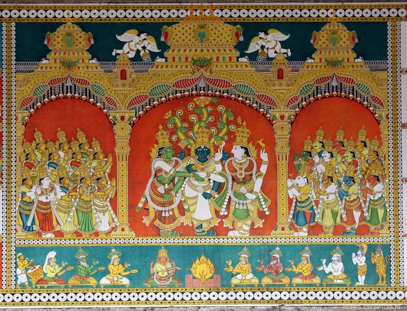
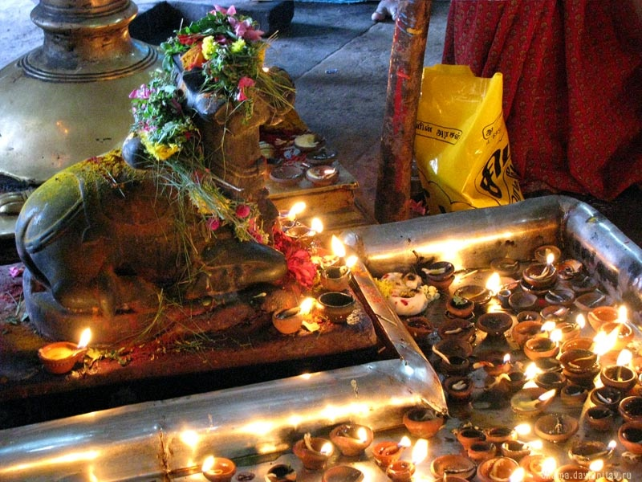

| Лекция об индуизме |
| Сергей Сергеев (http://kuraev.ru/index.php?option=com_smf&topic=491367) представяет вниманию лекцию кандидата философских наук, члена - корреспондент Международной Академии наук педагогического образования, Бурковой Галины Александровны. Она более тридцати лет является преподавателем вуза и преподает студентам философию. Вашему вниманию предлагается лекция по индуизму, которую Буркова Г.А прочитала своим студентам в Московском открытом социальном университете. |
| Индия - страна древней и своеобразной культуры, которая поражает воображение европейцев не только необычными танцами и музыкой, йогой, вегетарианством и необычными яствами. Индия - это еще и мудрость народа, воспитанная древними "Ведами", "Упанишадами", "Рамаяной" и "Махабхаратой". Истоки индийской культуры уходят в глубокую древность, в индуизм. В настощее время около 83 % населения Индии являются индуистами. Индуизм - это не только религия, но и философия, определяющая до сих пор мировоззрение индусов, их обычаи и традиции, их ментальность. Индуизм возник очень давно, во II -ом тысячелетии до нашей эры и в своем развитии прошел три этапа: • ведический (рубеж II и I тысячелетия до н. э.), • брахманический (Х - VII вв. до н. э.), • неоиндуизм (современный период). |
Брахманизм ( Х - VIIвв. до н.э.)________________________________________Второй исторический период индуизма связан с особым положением брахманов в древнеиндийском обществе и получил название брахманического (с VIII в. до н. э. и все I тысячелетие). В четырех варнах (брахмана - жрецы, кшатрии - воины, вайшья - земледельцы и ремесленники, шудра - неполноправные и рабы) брахманы занимали господствующее положение. Они служили богам и совершали религиозные обряды, были советниками царей, были грамотны и обладали знаниями. В одной из древних книг - "Шапатхе" - записано: "Есть два вида богов, - те, что являются богами, и те, что поют славящие их гимны. Между ними следует разделить жертву: богам - жертвенные дары, а человеческим богам - ученым брахманам - награду". Считалось , что если человек не дает брахманам награду (золото, бык, лошадь, одежда), то и жертвоприношение небесным богам бессмысленно. Сами же брахманы должны были отвечать определенным требованиям: они должны были соблюдать строгий аскетизм, блистать ученостью. Имущество брахманов считалось неприкосновенным, нельзя было противоречить брахману или сомневаться в верности его слов. Авторитет брахманов был непререкаем, они были советниками царей, были учителями и наставниками (гуру) для молодежи. Брахманы - жрецы действительно были самыми учеными людьми того времени. Они комментировали Веды, много занимались философией, размышляли о сущности мира и человека, о смысле жизни и смерти. Особенно много времени отводили аскеты - отшельники. Им принадлежат ныне известные всему миру философские тексты под названием"Упанишады" ( от древнеиндийского " упа - ни - шад", что означает "сидеть возле", т. е. быть у ног учителя, постигать тайный смысл его учения ). Разные исследователи называют разное количество "Упанишад", 150 - 235. На базе идей, сформулированных в "Упанишадах" позднее сложились различные философские школы, и ныне популярные в Индии. В брахманизме IV - Ш вв. родилась йога - система практических методов, которые, по мнению индусов, позволяют отделить душу человека (пурушу) от бренного, ненужного тела (пракрити). Конечная цель йоги - прекратить земное перерождение (сансару) и слиться с Брахманом. Практикуя йогу, монахи - отшельники стремились подавить и контролировать свое обыденное сознание, свои чувства, свою жизненную активность и воспитать особое надчувственное сознание. |
Основные идеи Упанишад________________________________________ Упанишады - это древние, известные всему миру, сборники религиозно- философских текстов. Основные идеи "Упанишад": 1. Учение о Брахмане. Брахман - это высшая абсолютная реальность. Но это не творец. Лишь иногда Брахман эманирует (как бы истекает) в виде феноменального мира (природных явлений). Следует обратить внимание на то, что в брахманической культуре слово "брахман" имеет три смысла: Брахман - высшая реальность, брахман - жрец, служащий этой высшей реальности, брахманами называлась и религиозно-философские сборники, написанные брахманами. Эти три смысла одного слова не случайны. Все они есть как бы различные состояния одного и того же высшего начала - Брахмана: жрец - брахман есть человеческое воплощение Брахмана, а тексты, написанные им есть материализованные мысли о Брахмане. Жрец - брахман, постигая Брахмана - Абсолюта произносит магическую формулу, выраженную словом "Ом". "Ом" одновременно ничего не обозначает, и обозначает все: и Брахмана, и природу, и прошлое и будущее. Когда жрец произносит "Ом", это означает: я достигну Брахмана, я - Брахман. 2. Природа в "Упанишадах" представлена как производное от Абсолюта - Брахмана. Поскольку в ней все течет и изменяется, нет ничего постоянного, она есть майя (иллюзия). Человек не должен привязывать свое сердце к миру переменчивых природных явлений. Отсюда можно объяснить равнодушное отношение индусов к изучению природы и естествознания. 3. Большее внимание "Упанишады" уделяют другим проблемам, связанным непосредственно с человеческим существованием, внутренним миром человека. Брахманов интересовал Космос и его влияние на человеческую судьбу. Они пытались понять, что есть смерть и чем она отличается от сна? Что составляет сущность жизни? 4. В "Упанишадах" сформулирована идея круговорота не только круговорота материи, но и жизни. Согласно индийскому мировоззрению, смерть не есть конец жизни, а лишь ее перерождение. Колесо круговращения жизни получило название сансары. После смерти человек может переродиться в какое - либо животное или растение. То какую форму примет новая жизнь зависит от кармы. 5. Учение о карме - одно из центральных в индуистской религии. Оно наложило большой отпечаток на культуру индийского народа, определило его образ жизни. Суть этого учения состоит в том, что сумма добрых и злых дел определяют карму человека и его дальнейшее перерождение после смерти. Хорошая карма дает хорошее перерождение (человек в будущей жизни может родиться брахманом или царем), плохая карма определяет плохое перерождение ( человек перерождается в низшее существо, может стать неприкасаемым или рабом, червяком или мошкой). Идея кармы отвечала этическим запросам древнеиндийского общества. Она решала проблему добра и зла, источником которых считался сам человек. Не общество, а сам человек, индивидуально, определял свою судьбу. Причиной нынешних страданий человека считалась его прошлая жизнь, будущее зависит от нравственной позиции в настоящей жизни. Никто не виноват в несчастьях человека, лишь он сам: что заслужил, то и получил. Учение о карме стало в Индии регулятором индивидуального и социального поведения десятков поколений индийцев. С одной стороны, оно было стимулом для соблюдения нравственности, необыкновенно доброжелательного отношения друг к другу, природе, к животным (которые в их прошлой жизни, возможно, были людьми), а с другой стороны - оно способствовало индивидуализму, заставляя заботиться о чистоте лишь собственной кармы, не работать, не сопротивляться социальному злу и пассивно переносить его. 6. Из этих представлений сложился принцип ахимсы - стремление не навредить живому и запрет употреблять в пищу животных, по той причине, что они раньше могли быть или будут в будущем людьми. 7. Закону кармы подчиняются все. Исключение составляют лишь некоторые брахманы (тапасья), которые многие годы отказывали себе во всем, ведя жизнь отшельника и аскета. Лишь они могут разрывать круг сансары и еще при жизни входить в мир высшего божественного Брахмана. Им не грозит перерождение, они после смерти тела достигают вечного покоя и блаженства. |
Йога________________________________________ Йога - это система практических методов, которые, по мнению индусов, позволяют отделить бессмертную душу от бренного тела, прекратить цепь перерождений и слиться с Брахманом. Комплекс йоги сложен. Для овладения им требуется выдержка, упорство, аскетизм, дисциплина, постоянные тренировки и умение поставить весь свой организм, даже его физиологию, под контроль воли. Вся система самоподготовки брахмана, практикующего йогу разделялась на восемь этапов - восемь ступеней соединения с мировой душой: 1. Воздержание (яма). Брахман должен быть сдержан во всем, уметь себя ограничивать в пище и других жизненных удобствах, подавлять половой инстинкт, отказаться от ненужного расходования жизненной силы, быть сосредоточенным и самоуглубленным. На этой стадии необходимо соблюдать ахимсу (отказаться от употребления животной пищи, вегетарианство). 2. Выполнение предписаний (нияма). Здесь на первый план выходит ахимса. Строгое соблюдение вегетарианства означает, что человек добился гармонии мыслей, слов и поведения - стал внутренне дисциплинированным. 3. Упражнения для тела (асана). На этом этапе разучиваются различные позы, обеспечивающие закаливание тела, управление им. Тело йога действительно становится крепким. Йоги не болеют и долго не стареют. 4. Дисциплина дыхания (пранаяма). Йоги стремятся добиться глубокого и ритмичного дыхания, они умеют задерживать его без ущерба для здоровья. 5. Дисциплина чувств (пратьяхара). Это последняя из подготовительных ступеней. Суть ее в умении отключить органы чувств, не реагировать на раздражители внешнего мира. 6. Дисциплина ума (дхарана). Йог сосредотачивает свое сознание на каком - то нужном ему явлении (это может быть часть его тела или само божество - Брахман). Брахманизм понимает эту стадию как первый шаг к состоянию святости и слияния с Абсолютом - Брахманом. 7. Созерцание (дхиана) - это второй шаг по пути к Брахману. Сосредоточенная мысль все более углубляется, становится все более отвлеченной и иррациональной, и как утверждают поклонники йоги, доходит до познания реальной Первоосновы мира. 8. Транс и экстаз (самадха) - последняя стадия на которой духовное "я" (пуруша) освобождается от тела (пракрити) и наступает блаженство (по - индийски -мокша). В этот момент, считают брахманы - йоги, карма уничтожается, земные перерождения более невозможны. Древняя йога до сих пор широко практикуется индусами и является неотъемлимой частью современной индийской культуры. |
Неоиндуизм. Шиваизм и вишнуизм(современный период) ________________________________________ В настоящее время в Индии распространен более упрощенный, освобожденный от сложных философских построений индуизм. Его называют народным или неоиндуизмом. Народный индуизм воспринял и сохранил древние религиозные учения о карме и ее этической основе, сансаре и ахимсе. Однако, эти представления в культуре простого народа приняли упрощенную форму, старые, абстрактные боги брахманов были забыты и появились новые боги, которые имели антропоморфный вид (стали похожи на людей). Из пантеона многочисленных богов в современной Индии наиболее популярными являются три : Брахма, Шива и Вишну. Бог Брахма - видимо, является модификацией Брахмана - Абсолюта, которому поклонялись жрецы - брахмана. Брахма считается создателем мира. Современные индийцы так объясняют творение мира: в первобытных водах появилось золотое яйцо, в яйце находился Брахма. Он силой своего духа разделил яйцо на две половинки. Из одной - возникло небо, из другой - земля. Далее Брахма создал воздух, первоэлементы, богов, людей, животных и растения. Брахму изображают с четырьмя лицами. В Индии имеются храмы, посвященные Брахме, но бог этот более популярен среди жрецов - брахманов и аскетов. Простые люди в современной Индии более всего поклоняются богам Шиве и Вишну. Бог Шива - изображается индуистами в виде человека с четырьмя руками, часто танцующим, и с третьим глазом на лбу. Ему приписывается необыкновенная по силе энергия - шахти - с помощью которой он может одновременно и творить, и разрушать мир. Это бог - разрушитель и созидатель. Благодаря энергии шахти идут дожди, растет трава, рождаются люди, любят и умирают. Это еще и бог смерти. Если Шива открывает третий глаз, то все вокруг гибнет. В индийском эпосе существует такая легенда: у Шивы и его жены Парвати был сын Ганеш. Однажды в гневе на сына Шива открыл свой третий глаз, энергия которого испепелила голову мальчика. Горе, отчаяние и мольбы Парвати заставили Шиву вернуть голову, предварительно отрубив ее у проходящего слоненка (с тех пор сын Шивы и Парвати бог - покровитель торговли Ганеш изображается в виде мальчика с головой слоненка). Но Шива - это еще и созидатель жизни, детей. Особенно активно почитается в современной Индии мужское начало Шивы. В Индии распространен культ лингама - мужского полового члена. Каменные ваяния его можно увидеть около храмов, на улицах и в жилищах индусов. Поклонники Шивы считают, что особенно ярко проявляет себя энергия шахти, идущая от этого бога, в любовных отношениях. Поэтому любовь в Индии окружена особым религиозным почитанием. Любовное чувство, наполнившее человека, обожествляется и понимается как дар Шивы. Любить в Индии означает служение богу. Существуют храмы, посвященные любви. В них живут жрицы любви девадаси - прекрасивые девушки, занимающиеся любовью ритуально. В Индии существует особое искусство любви - кама. Считается, что искусством камы должен владеть каждый. Причем культ чувственных наслаждений не сказывается на моральных основах индийского общества. Индусы при этом в любви скромны и целомудренны. Любовь никогда не рассматривалась как проявление инстинкта. Семья в Индии была всегда крепка. Не исключено, что причиной этого было искусство камы, которое упорядочивало половые отношения и имело целью дать наибольшее наслаждение мужчине и женщине. Исследователи предполагают, что искусство камы возникло в Индии как компенсация отсутствия браков по любви. Известна древняя индийская традиция родителей заранее договариваться о браках детей. С культом Шивы связан и культ его жены Дурги - Кали. Эта богиня имеет две ипостаси: она может быть и Дургой и Кали. Богиня Дурга - грозная, десятирукая, часто изображаемая со львом, олицетворяет собою Великую мать - женское начало природы. В Индии в честь нее построено много храмов, которые всегда, особенно осенью, полны верующих. Дурге посвящается праздник, длящийся десять дней. На берег Ганга приносятся тысячи скульптурных изображений богини, который в день окончания религиозного праздника опускаются на плотах в Ганг. Другая ипостась - Кали является олицетворением зла. Кали изображают в виде чудовища с четырьмя глазами, оскаленными зубами и высунутым языком с серьгами в виде тел младенцев и ожерельем из черепов. Индусы боятся Кали и в честь нее устраиваются красочные праздники с кровавыми жертвами из козлят. Считается, что Кали является покровительницей преступников, грабителей и убийц. В Индии существовала секта душителей - тхагов, убивающий людей в честь богини Кали. Индусы поклоняющиеся Дурге - Кали и Шиве называют себя шиваитами. Другая часть населения современной Индии является вишнуитами - эти верующие поклоняются богу Вишну. Бог Вишну - противоположен Шиве, он миролюбив, мягок и непротиворечив. Это бог - охранитель. Он также имеет четыре руки. Изображается на плывущем драконе или на троне из белого лотоса. Но Вишну, согласно индийскому преданию, постоянно меняет свою внешность. Состояний Вишну (аватар) бесконечное множество. Но главными являются девять: Вишну может явится в мир то в виде рыбы или черепахи, то в виде вепря, человеко - льва или карлика - великана, то в виде воина, то в виде Будды, то в виде Кришны и т.д. Любимая аватара Вишну, как считают индусы, Рама и Кришна. Вокруг них сложился поэтический эпос Индии "Рамаяна" и "Махабхарата". Носителями идей индуизма и его культа являются особые касты жрецов - брахманов. Их главной социальной функцией является обслуживание религиозных потребностей народа. Почти в каждом индийском доме имеется домашний алтарь - уголок, где стоят маленькие скульптуры индуистских богов, около которых верующие совершают несложные ритуальные действия. Однако, авторитет брахмана по - прежнему велик. Только брахманы могут приносить жертвы богам. Если в дом пришел брахман, это считается большим счастьем для семьи. Такие события как свадьба, рождение ребенка или похороны не обходятся без брахмана. Среди брахманов до сих пор существует строгая иерархия и распределение религиозных функций. Брахманы - жрецы живут в храмах, куда простые индусы входят с чувством священного религиозного трепета. В храмах нет икон, свечей, есть лишь скульптурные изображения богов. Простые индусы приходят в храм, что посмотреть на эти изображения, положить к ногам статуй, но с разрешения жреца, цветы и сладости. В сельской местности до сих пор распространена практика заклинаний - тантризм. Читаются особые формулы - мантры, с помощью которых, как утверждают деревенские жители, можно вызвать энергию бога Шивы (шахти) и достичь желаемого. Свои мантры имеют рыбаки, овцеводы, земледельцы и т.д. Маги широко использовали своеобразные графические диаграммы Вселенной (мандалы), которыми, по представлениям тантристов, насыщена магическими знаками и символами. Широко популярны были также различные амулеты и талисманы, колдовство. |
Обряды и праздники индуизма________________________________________ Обряды и праздники индуизма. Их огромное количество. Праздники устраиваются в честь многочисленных богов, которым поклоняются индусы. Это праздники в честь Рамы иКришны, Дурги и богини счастья Лакшми, в честь бога Ганеша и т. д. В честь Шивы празднуется каждое полнолуние месяца. В этот праздник бьют в барабана, исполняются эротические танцы, особенно в месяцы, когда от земли ждут урожай. Широко популярны в Индии паломничества к святым местам. Регулярно совершается великое паломничество Кумбхамел в честь всех древних богов. Главное место паломничества Праяга - место, ставшее священным потому, что , по легенде, бог Индра, спасая от злых демонов сосуд с напитком бессмертия, именно здесь опускался на землю. Один раз в шесть лет, когда совершается неполный ритуал, и один раз в двенадцать лет при совершении полного ритуала со всех концов Индии в Праяге собираются паломники совершают обряд омовения в священных водах Ганга Кроме таких общенациональных праздников существует огромное количество местных праздников, которые обычно сопровождаются ярмарками, торговлей, плясками, всеобщим весельем. К домашним обрядам относятся свадебный и погребальный обряды. Свадьба в Индии проводится пышно и торжественно. Жених и невеста обходят вокруг жертвенного огня и после этого брак считается заключенным. Похоронный обряд тоже прост. В Индии нет кладбищ. Существуют лишь священные места, где сжигается тело умершего. К этому месту приносят умершего, завернутого в ткань. Старший родственник зажигает погребальный костер и тело сжигается. Когда костер догорит, останки собираются в сосуд и опускаются в воды реки. Десять дней семья носит белую траурную одежду. В течение тысячелетий в Индии существовал обычай вдов сжигать себя на погребальном костре вместе с мужем. Отдельные случаи такого самосожжения бывают и в наше время. |
Заключение________________________________________ Таким образом, современный индуизм представляет собою сложное сложное культурное образование. В нем переплелись древние анимистические представления, архаические религиозные обряды, морально - нравственные установки и философские идеи. Специфика индуизма проявляется в следующем: • в индуизме отсутствует символ веры, имеющийся почти во всех современных религиях; • индуизм дает человеку свободу выбора личного бога, в нем отсутствует понятие "ересь", и обычна веротерпимость; • в этой религии нет церковных организаций, нет священников и степеней священства; • отсутствуют пророки. |
ИНДОЛОГИЯсовокупность наук, изучающих историю, экономику, язык, материальную и духовную культуру народов Индии. Интерес к этим проблемам возник в глубокой древности как в самой Индии, так и в др. странах. Как наука И. оформилась в кон. 18 в. Западноевроп. бурж. И. Первыми европ. индологами были аббат Рейналь, автор фундаментального труда "История обеих Индий", и группа ученых, чиновников Ост-Индской компании - У. Джонс, Ч. Уилкинс, У. Колбрук и нек-рые др. Деятельность последних отражала интересы колонизаторов, но наряду с изданием дайджестов (сборников) из разных юридич. памятников Индии для нужд брит. судей они публиковали переводы памятников эпоса и художеств. лит-ры. Азиат. об-во, осн. в 1784 в Калькутте, стало первым центром индологии. У. Джонс положил начало науч. изучению санскрита. Ему принадлежат издания переводов "Законов Ману" и ряда отрывков из др. дхарма-шастр и первый перевод драмы Калидасы "Шакунтала". Изучение инд. языков с практич. целями было организовано в Колледже форта Уильям (осн. в 1800) в Калькутте. Было издано неск. "Историй Индии", наиболее значит. из них принадлежит М. Элфинстону. Господство Англии в Индии затрудняло развитие И. в др. странах Европы, но санскритологич. школа в Германии получила всемирное признание. В 1845 было основано "Die Deutsche Morgenländische Gesellschaft". Итогом начального периода развития И. явился энциклопедич. труд нем. индолога Х. Лассена "Индийские древности" (Ch. Lassen, Indische Alterthumskunde, Bd 1-4, Lpz., 1847-61). Расцвет зап.-европ. бурж. И. относится ко 2-й пол. 19 - нач. 20 вв. Были изданы "История Индии, рассказанная ее собств. историками" (Н. М. Elliot, J. Dowson, The history of India as told by its own historians, v. 1-8, L., 1867-77) - сб. отрывков из большого числа араб. и перс. источников по Индии, и собрание отрывков источников и памятников на санскрите (J. Muir, Original sanscrit texts on the origin and history of the people of India, v. 1-5, L., 1858-70). В 1853 начала печататься "Bibliotheca Indica", в к-рую вошли важнейшие древние и ср.-век. памятники на санскрите, хинди, бенгали, персидском и на ряде др. яз. Расширился круг источников в работах С. Лейн-Пула, У. У. Хантера и др. В. А. Смит опубликовал неск. работ по древней и ср.-век. истории, в т.ч. "Оксфордскую историю Индии" (V. A. Smith, The Oxford history of India, Oxf., 1919). Вышла работа Дж. У. Кея и Г. Маллесона о нар. восстании 1857-59 под фальсификаторским назв. "История инд. мятежа" (J. W. Кауе, H. Malleson, History of the Indian mutiny of 1857-58, v. 1-6, L., 1897-98). Параллельно шло развитие вспомогат. ист. дисциплин. Работы Дж. Принсепа, расшифровавшего надписи Ашоки, составили эпоху в развитии инд. палеографии, хронологии и эпиграфики. С 1888 стала выходить "Epigraphia Indica" - крупнейшее издание инд. надписей. Известны археологи и эпиграфисты А. Кан-нингем, Дж. Бёрджесс, Дж. Ф. Флит и др. Большой вклад в изучение инд. рукописей и надписей внесли нем. ученые Г. Бюлер и Л. Кильхорн. В справочнике Р. Сьюэлла (R. Sewell, The historical inscriptions of Southern India, Madras, 1932) подведены итоги этой кропотливой работы, даны генеалогич. таблицы всех осн. южноинд. династий. Большой этнографич. материал был собран Д. Иббетсоном, Э. Тёрстоном, К. Л. Таппером и др. Основателем бурж. школы буддологии считается Б. Г. Ходжсон. Историей буддизма занимались также М. Моньер-Уильямс, Т. У. Рис-Дейвидс, Г. Ольденберг. Одним из крупнейших европ. индологов 2-й пол. 19 в. был Макс Мюллер - автор многочисл. трудов по истории культуры, литературы, философии и религии народов Индии. Под его редакцией вышли "Sacred Books of the East" (v. 1-49, Oxf., 1879-94), куда были включены переводы почти всей канонич. индуистской лит-ры. Э. Сенар и Э. Бюрнуф заложили в этот период основы франц. И. Успехи лингвистики были связаны с достижениями сравнит. метода в европ. языкознании. Издаются работы Дж. Бимса (J. Beames, A comparative grammar of the modern Aryan languages of India, v. 1-3, L.,1872-1879), P. Хёрнле (Rudolf Hoernle, A comparative grammar of the Gaudian Languages, L., 1880), P. Колдуэлла (R. Caldwell, A comparative grammar of the Dravidian or South-Indian family of languages, L., 1856) и др. работы. Под рук. выдающегося лингвиста Дж. А. Грирсона и при участии С. Конова в 1898-1901 проводилось полное обследование, выявившее все языки, употребляемые в Индии, результаты к-рого были опубликованы в многотомной работе (Grierson G. A., Linguistic survey of India, v. 1-11, Calcutta, 1904-27). В 50-х гг. 19 в., в связи с переворотом в науке об обществе, совершенным К.Марксом и Ф. Энгельсом, в зап.-европ. И. зародилось марксистское направление. Большое значение для формирования этого направления в И. имели индологич. работы К. Маркса и Ф. Энгельса, в к-рых на конкретном материале раскрывались особенности обществ. строя Индии до англ. завоевания, экономич. и политич. последствия колониального порабощения, давалась науч. периодизация истории страны в 18-19 вв. и показывалось ист. значение нар. восстания 1857-59, за ходом к-рого Маркс и Энгельс следили с большим вниманием. Появление марксизма, а также накопление нового фактич. материала, с одной стороны, и усиление нац.-освободит. движения - с другой, вызвали у ряда зап.-европ. бурж. индологов интерес к экономич. и социальным проблемам. Становится более комплексным само понятие И. Наряду с этим усиливается тенденциозность в освещении проблем истории Индии в работах представителей классич. англ. школы. Это относится прежде всего к "The Cambridge history of India" (v. 1, 3-6, Camb., 1922-37), написанной наиболее крупными англ. индологами Дж. Алланом, У. Хейгом, Г. Додуэллом и др., а также к трудам Г. Хераса, Д. Деррета и др. Крупнейшим совр. англ. индологом является А. Бэшем. Вышедшие после 2-й мировой войны работы англ. историка П. Датта являются существ. вкладом в марксистскую И. Среди герм. индологов наиболее известны братья Шлегель, А. Вебер, Г. Якоби. В 1-й пол. 20 в. выдвинулись такие индологи, как Г. Людерс, М. Винтерниц, X. Глазенапп, X. Хертель, разрабатывавшие проблемы древней и ср.-век. инд. лит-ры и фольклора. Во Франции культуру, религию и философию Индии изучает один из крупнейших совр. востоковедов Л. Рену; др. история, лит-ра и лингвистика являются областью исследования другого франц. ученого Ж. Филлиоза. В Италии большим кругом индологич. проблем занимается Дж. Туччи. В США и Канаде широко изучаются проблемы социальных изменений, происходящих в Индии после образования независимого гос-ва. В последнее время И. развивается также во многих странах Азии - Японии, Цейлоне, Пакистане, Бирме. В Индии изучение истории, экономики, языка, материальной и духовной культуры ее народов началось еще в колониальный период (сам термин "И." употребляется в Индии в более узком смысле, гл. обр. для обозначения научных дисциплин, изучающих древнюю историю, санскрит, древнюю и средневековую литературу). Раммохан Рай первым из индийцев начал изучение др.-инд. памятников. В 1816-20 он опубликовал сокращенное издание ведант с переводом на бенг. яз. Видными специалистами по санскриту, ведической и буддийской лит-рам были Р. Л. Митра и Хара Прасад Шастри; Р. Г. Бхандаркар создал ряд работ по вопросам истории и филологии. Значит. внимание уделялось экономич. исследованиям. В трудах Д. Наороджи, Б. Д. Басу и Р. Датта разоблачалась экономич. политика брит. захватчиков. Долгое время инд. И. развивалась под сильнейшим влиянием английской "классической" школы. Это относится к трудам крупнейшего инд. историка Дж. Саркара, а также к многочисл. "Историям Индии", созданным Н. К. Синха и А. Ч. Банерджи (N. К. Sinha, A. Ch. Banerji, 1944, рус. пер. 1954); Р. Маджумдаром, X. Райчаудхури и К. К. Датта; Ч. С. Шринивасачари и Р. Айянгаром, 1947-52; Нилакантой Шастри, 1950. После достижения Индией независимости интерес к социальной и экономич. истории возрос. Этим вопросам посвящены работы Р. Р. Трипатхи, Ибн Хасана, А. Боса, А. С. Алтекара, Тара Чанда, Т. Райчаудхури, Дашаратха Шармы и др. Экономич. историей Юж. Индии занимаются Т. В. Махалингам, Нилаканта Шастри и др. Историю религии и философии изучают С. Радхакришнан, Р. Мукерджи, Д. М. Датта и др. В независимой Индии источниковедч. и археол. работа стала охватывать все периоды истории. Видными эпиграфистами являются Б. Ч. Чхабра, Д. Ч. Сиркар. Большое внимание уделяется изучению нац.-освободит. движения в колониальный период. Можно отметить, напр., работы Н. Кабираджа "Нац.-освободит. движение в Бенгалии" (1954; рус. пер. 1956) и М. X. Хана "История Типу Султана" (M. H. Khan, History of Tipu Sultan, Calcutta, 1951) и мн. работы Ганда Сингха по истории сикхского движения. Издаются новые док-ты в серии "Движение за освобождение Индии" ("Freedom movement in India"). К столетию восстания 1857-59 было издано много книг и сборников (S. Sen, Eighteen fifty-seven, Calcutta, 1957, и др.). Из историй Инд. над. конгресса наиболее известны двухтомники Б. П. Ситарамайи и Х. Н. Гупты. Огромное количество работ посвящено деятельности М. К. Ганди. Ряд историков-индусов стремится принизить роль мусульман в Индии, напр. К. М. Мунши. Коммуналистич. (религ.-общинные) тенденции видны в редактируемом им коллективном труде "История и культура инд. народа" (The history and culture of the Indian people, v. 1-6, 1957-60) и др. работах. К недостаткам инд. ист. школы относится также нередкая модернизация древних и ср.-век. институтов. Важной составной частью инд. И. стала экономика. Экономич. проблемами занимаются Д. Р. Гадгил, П. Ч. Джайн, М. М. Мехта, В. Раманадхан, П. С. Локанатхан и др. В инд. И. успешно развивается марксистское направление. Ш. А. Данге опубликовал исследование о возникновении клас. общества в Индии. Работы Е. М. Ш. Намбудирипада (Е. М. S. Namboodripad, The national question in Kerala, Bombay, 1952, и "Махатма Ганди и гандизм" (рус. пер.,М., 1960)) являются значит. вкладом в разработку ряда сложных вопросов истории страны. Экономич. историю периода феодализма изучал К. М. Ашраф. В настоящее время этими вопросами занимаются Х. Мукерджи и Ирфан Хабиб. На методологич. основе марксизма стремятся осмыслить историю родины Д. Д. Косамби, Б. Н. Датта, Р. Ш. Шарма и другие. В России интерес к изучению Индии возник в 70-80-х гг. 18 в. (Н. И. Новиков, А. Н. Радищев, Винков). Большая заслуга в развитии рус. И. принадлежит Г. С. Лебедеву, к-рый в 1805 выпустил капитальный этнографич. труд "Беспристрастное созерцание систем Вост. Индии Брамгенов, священных обрядов их и нар. обычаев" (ч. 1-3, СПБ). Заметно способствовали росту знаний об Индии путешествия художника А. Д. Салтыкова и П. И. Пашино. Рус. революц. демократы внимательно следили за восстанием 1857-59. В сент. 1857 в "Современнике" была напечатана статья Н. А. Добролюбова "Взгляд на историю и совр. состояние Ост-Индии". Н. Г. Чернышевский уделял значит. внимание анализу проблем совр. ему Индии. Для развития науч. И. большое значение имело открытие Н. M. Карамзиным в нач. 19 в. рукописи "Хожения за три моря" А. Никитина. Ф. П. Аделунг в 30-х гг. 19 в. издал "Bibliotheca sanscrita" - наиболее полный для того времени каталог санскритских рукописей и книг. С 30-40-х гг. в нек-рых ун-тах (Петерб., Казанском, Киевском, Моск.) стал преподаваться санскрит. Первыми рус. санскритологами были Р. Ленц, П. Я. Петров, К. А. Коссович. В 1855-75 в Петербурге вышел большой санскритский словарь, составленный О. Н. Бётлингом в сотрудничестве с Р. Ротом. Крупнейшим рус. индологом 19 в. был И. П. Минаев (1840-90). Наряду с исследованиями по вопросам буддизма и инд. лит-ры им был написан ряд статей по актуальным политич. проблемам, касавшимся англ. политики в Индии, Бирме и Афганистане. Ему также принадлежат работы по совр. фольклору народов Сев. Индии. Социолог М. М. Ковалевский в работе "Общинное землевладение, причины, ход и последствия его разложения" (М., 1879) посвятил главу проблемам индийской общины. Эта работа была высоко оценена К. Марксом. Крупнейшими специалистами в области лит-ры на санскрите и пали, мифологии, истории религ.-филос. учений и т. п. являлись С. Ф. Ольденбург и Ф. И. Щербатской. По инициативе Ольденбурга в 1898 стала выходить "Bibliotheca Buddhica" - крупнейшее собрание текстов по истории буддизма. И. в СССР и др. социалистич. странах. Подлинно комплексное изучение Индии началось после Вел. Окт. социалистич. революции. Методологич. основой сов. И. являются труды К. Маркса, Ф. Энгельса и В. И. Ленина. Для сов. И.характерно особое внимание к изучению борьбы нар. масс за нац. и социальное освобождение. Работа И. М. Рейснера "Очерки клас. борьбы в Индии" (ч. 1, М., 1932) заложила основу изучения новой истории Индии в СССР. Проблемами нац.-освободит. движения, агр. вопросом и т. д. занимались М. Павлович (Вельтман), Б. Сейгель. История борьбы пролетариата прослежена в работах В. В. Балабушевича. Акад. А. П. Баранников широко поставил систематич. изучение новоинд. языков, заложил основы инд. лексикографии в сов. И. Ф. И. Щербатской - крупнейший знаток буддизма, в 1930-32 опубл. наиболее фундаментальную из своих работ "Buddhist logic" (v. 1-2). Его ученики А. И. Востриков, Е. Е. Обер-Миллер, М. И. Тубянский и др. внесли большой вклад в изучение санскрита, философии и лит-ры Индии. Сов. исследователи изучают все осн. этапы истории Индии. Ряд работ по древней истории опубликовали А. М. Осипов, Г. Ф. Ильин и др. В области ср.-век. истории вышли книги: К. З. Ашрафян, Делийский султанат, М., 1960; К. А. Антоновой, Очерки обществ. отношений и политич. строя Могольской Индии времен Акбара (1556-1605), М., 1952, и др. Проблемы новой истории исследуются в работах: И. М. Рейснера, Нар. движения в Индии в XVII - XVIII вв., М., 1961; К. А. Антоновой, Англ. завоевание Индии в XVIII в., М., 1958; В. И. Павлова, Формирование инд. буржуазии, М., 1958, и мн. др. Проблемами новейшей истории и экономики Индии занимаются Л. Р. Гордон-Полонская, Т. Ф. Девяткина, А. М. Дьяков, Г. Г. Котовский, А. И. Левковский, С. М. Мельман и мн. др. "Новейшая история Индии" (М., 1959), "Новая история Индии" (М., 1961) подводят известный итог развитию марксистской И. за последние десятилетия. Сов. учеными ведутся также исследования в области лит-ры и языков народов Индии, истории инд. философии, иск-ва, этнографии и т. д. Большой вклад в изучение буддизма и языков санскрита и пали внес Ю. Н. Рерих. В переводе на рус. яз. изданы часть "Махабхараты", "Артхашастра", "Дхаммапада" и др. Вопросами изучения языков и лит-р народов Индии занимаются акад. АН Туркм. ССР Б. Л. Смирнов, В. М. Бескровный, Е. М. Быкова, В. А. Новикова, И. С. Рабинович, И. Д. Серебряков, Е. П. Челышев, С. Г. Рудин, В. Г. Эрман, В. И. Кальянов и ряд др. Индологи др. социалистич. стран добились значит. успехов. Среди них следует упомянуть Ф. Веллера (ГДР), специалиста по древней истории, философии и лит-ре В. Рубена (ГДР), археолога Х. Моде (ГДР), историка И. Фишера (ЧССР), экономиста М. Краса (ЧССР), дравидолога К. Звелебила (ЧССР), историков Л. Скужака (ПНР) и Е. Шлюшкевича (ПНР). потырено здесь: http://dic.academic.ru/dic.nsf/sie/6732/%D0%98%D0%9D%D0%94%D0%9E%D0%9B%D0%9E%D0%93%D0%98%D0%AF |
| Авдий Каллистратов
Но, в принципе, статья, хоть и довольно простая, но все же более-менее адекватная. Хотя попадаются в ней и некоторые неточности. На которые осмелюсь указать. 1. "В одной из древних книг - "Шапатхе" - записано..." Всякий, владеющий навыком поиска по интернету, может проверить, что "древней книги" под названием "Шапатха" не существует в природе. Я подозреваю, что автор имела в виду "Шатапатха-брахману", но либо кто-то не расслышал, либо произошла какая-то иная ошибка. 2. "В настоящее время в Индии распространен более упрощенный, освобожденный от сложных философских построений индуизм. Его называют народным или неоиндуизмом". Вообще в современной индологии "неоиндуизмом" называют нечто иное. "НЕОИНДУИ́ЗМ, в индуизме условное наименование реформаторского течения, возникшего в 19 веке в связи с изменениями, происходившими в экономической, социальной и идеологической сферах индийского общества. Эти изменения, в большой степени вызванные влиянием вначале мусульманской, а затем европейской, в особенности, английской культур, положили начало постепенному вхождению Индии в мировую цивилизацию" (Энциклопедический словарь). То есть, неоиндуизм - это Брахмо-самадж и все, что из него выросло (Рамакришна, Вивекананда и Сарвапалли Радхакришнан), а вовсе не "народный индуизм". Вот статья из философского словаря на эту тему: http://dic.academic.ru/dic.nsf/enc_philosophy/6877/%D0%9D%D0%95%D0%9E%D0%98%D0%9D%D0%94%D0%A3%D0%98%D0%97%D0%9C 3. Бог Брахма - видимо, является модификацией Брахмана - Абсолюта, которому поклонялись жрецы - брахмана. "Бог Брахма" является модификацией ведийского Праджапати, а вовсе не Брахмана. 4. В Индии имеются храмы, посвященные Брахме, но бог этот более популярен среди жрецов - брахманов и аскетов. Вот эта фраза и заставила меня подумать, что автор в Индии не была (хотя это не так, судя по этой ссылке: http://gburkova.narod.ru/about.htm - она там побывала). В Индии НЕТ крупных храмов Брахмы. Один-единственный большой и древний храм, посвященный ему, находится в Пушкаре, и это тесно связано с местной легендой. Вообще же храмовое поклонение Брахме для Индии абсолютно не характерно. Есть несколько маленьких храмов в Южной Индии (Тирунаваю, штат Керала; Кумбаконам и Тирупаттур, Тамил-Наду; Нерур, Махараштра; Асотра, Раджастхан; Брахма-Кармали, Гоа; Кхедбрахма, Гуджарат и несколько других), но по сравнению с храмами Вишну и Шивы это - капля в море. 5. Индусы поклоняющиеся Дурге - Кали и Шиве называют себя шиваитами. Опять неточность. Культы Шивы и Дурги (Кали) - явления совершенно самостоятельные и друг от друга обособленные. Поклонники Дурги (Кали) называются шакты, в отличие от поклонников Шивы (шайва). 6. Состояний Вишну (аватар) бесконечное множество. Но главными являются девять Не девять, а десять. Есть даже такое устойчивое выражение - "Даша-аватара", т.е. "десять аватар". 7. В храмах нет икон, свечей, есть лишь скульптурные изображения богов. Иконы:  (фрагмент стенной росписи в храме Минакши в Мадурае) Свечи:  (масляные лампады в том же Мадурае.) Кстати, типичный пример "псевдонауки" - это ранняя индология, основание которой заложили английские христиане - В. Джонс, М. Монье-Вильямс и т.д. Их изучение ведической культуры и ведических текстов имело своей целью дискредитацию религии индийцев и насаждение христианского мировоззрения. Вот что, например, писал сэр Моньер-Вильямс, автор крупнейшего и известнейшего санскритско-английского словаря и небольшого труда под характерным названием "Изучение санскрита в связи с миссионерской деятельностью в Индии": "Вряд ли можно допустить большую ошибку, чем насильственно приводить все эти нехристианские библии в соответствие с некими научными теориями развития, а затем рассматривать святую христианскую Библию как венец эволюции религии. Эти нехристианские библии - продукт развития в неверном направлении. Начинаясь с редких проблесков истины, они уводят в беспросветную тьму" (вот типичный пример научной "беспристрастности"). "Мне представляется, что наши миссионеры уже достаточно убеждены в необходимости изучать все эти труды, чтобы знать ложную веру, с которой они сражаются. Может ли армия добиться успеха на территории противника, если она не знает, какие позиции он занимает и какова сила его укреплении, если она не сумеет обратить захваченные в бою батареи против своего врага?" А вот что писал на этот счет выдающийся немецкий индолог Теодор Гольдштукер (1821-1872) (коротко, но со вкусом): "Средства нашей борьбы с врагом столь же просты, как и неотразимы: должное представление их древней литературы подрастающему поколению". |
| НЕОИНДУИЗМ течение филос.-религ. мысли совр. Индии. Возникнув в 1-й пол. 19 в. как реформированная форма индуизма, Н. отразил развитие бурж. отношений, становление нац. самосознания и явился одной из идеологич. форм борьбы за бурж.-демократич. преобразования и нац. освобождение. Теоретич. основой Н. послужила адвайта-веданта Шанкары и вишешта-адвайта Рамануджи. Идеологи раннего Н., оставаясь в рамках филос. проблематики индуизма, призывали к модернизации религ.-этич. концепций путем возрождения чистого монистич. теизма. Период переосмысления духовного наследия Индии в связи с развитием Н. называют в бурж. лит-ре эпохой Возрождения. Начало реформаторскому движению положила деятельность Раммохан Рая, основавшего (1828) об-во Брахмо самадж. Это общество, противопоставлявшее чистый монотеизм Упанишад политеизму со всеми его атрибутами, выступало против кастовых традиций, детских браков и наиболее мистич. доктрин ортодокс. индуизма (переселения душ, кармы). Развитие движения сопровождалось усилением демократич. элементов; в 1866 произошел раскол об-ва, в результате к-рого создалось два крыла – умеренное, выдвигавшее на первый план религ. и этич. вопросы, и радикальное, уделявшее основное внимание демократизации обществ. жизни и просветительской деятельности. Последнее представляли два об-ва: "Брахмо самадж Индии" и "Прартхана самадж" (молитвенное об-во), благодаря деятельности к-рых в 1872 был издан закон, запрещающий полигамию и детские браки и разрешающий межкастовые браки и замужество вдов. В 70-х гг. возрождение индуизма достигает апогея – появляются теоретики, оформляются осн. направления, активизируется борьба против материализма, достигшего в это время в Индии определ. успехов. В Н. намечаются западнич. и индофильское течения: первое проповедует идею синтеза зап. либерализма и инд. религ. мысли, второе стоит на страже индуизма как единств. философии для Индии в настоящем и будущем. Выявляется антиангл. направленность движения. Гл. представителем Н. этого периода был религ. мыслитель Рамакришна. Его спиритуалистич. учение "веданта в действии" явилось религ. формой протеста против колониального гнета. Гуманизм и демократизм учения, стремление приблизить философию к практич. жизни обеспечили ему популярность. Взгляды Рамакришны были распространены по всему миру его учеником Вивеканандой, впервые открыто заявившим о превосходстве инд. культуры. Мировоззрение Вивекананды включало ряд элементов, близких к утопич. социализму. Начало новейшего этапа развития Н. хронологически совпадает с историч. периодом бурного роста анти-империалистич. борьбы в Индии после 1917. Сохраняя прежние узловые проблемы Н., его совр. представители (Абхедананда, Вадиа, Радхакришнан) акцентируют в них гл. обр. теологич. иррацион. моменты, а также идею синтеза идеалистич. аспектов зап.-европ. и вост. философии. Самым видным пропагандистом идеи этого синтеза является Радхакришнан, стремящийся создать мировую религ. идеологию и "переродить" коммунизм с помощью религии. Единственно истинной религиозно-филос. позицией совр. неоиндуисты признают абс. монотеизм веданты, а гл. методом филос. исследования – интуицию и мистич. переживание. Лит.: Farquhar J. Ν., Modern religious movements in India, L., 1929; Desai A. R., Social background of Indian nationalism, [2 ed. ], Bombay, 1954. С. Кедрова. Москва. Неплохая статья. Согласно ей, отличительные признаки НЕОиндуизма следующие: 1. Выступление против кастовых традиций, и наиболее мистических доктрин ортодоксального индуизма (переселения душ, кармы). 2. Идея синтеза идеалистических аспектов западно-европейской и восточной философии. 3. Единственно истинной религиозно-философской позицией современные неоиндуисты признают абсолютный монотеизм веданты, а главным методом философского исследования – интуицию и мистическое переживание. |